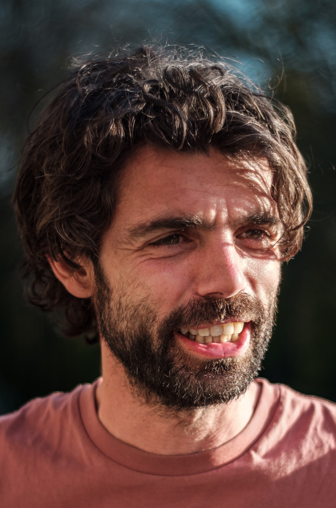
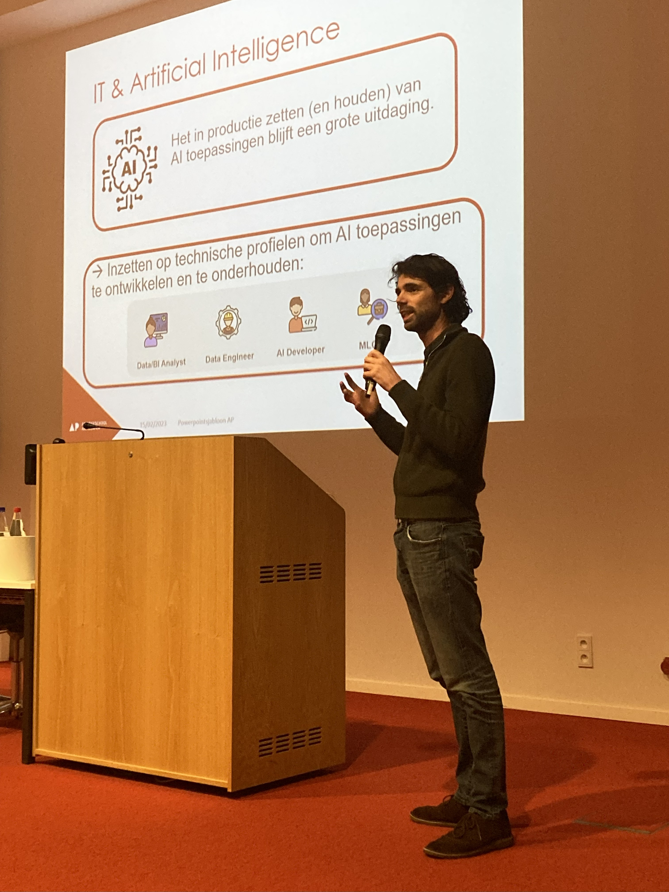
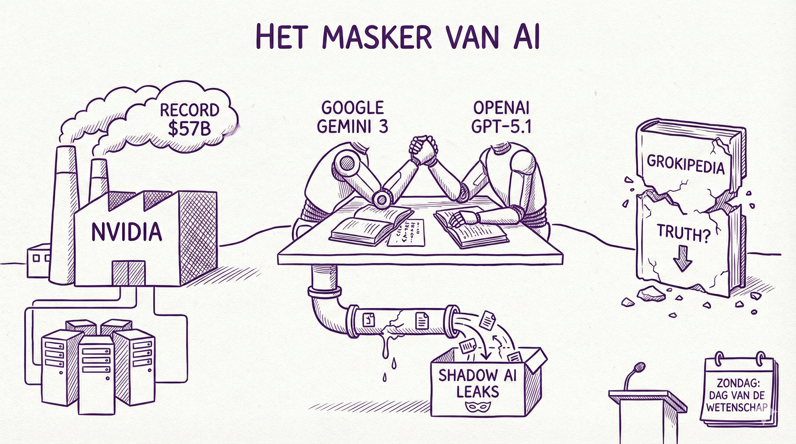

ICT Praktijkdag Workshop: "Maak je eigen AI-assistent"
Workshop tijdens de ICT Praktijkdag.
Meer infoDocent | Onderzoeker | Schrijver | Spreker
Met een kritische en wetenschappelijke blik volg ik AI-ontwikkelingen en maak de impact op werk, onderwijs en samenleving begrijpelijk.


Inspirerende presentaties op maat voor uw organisatie, van boardroom tot klaslokaal.
Een kritische verkenning van artificiële intelligentie in 12 thematische hoofdstukken. Van ecologie tot arbeidsmarkt en van privacy tot rechtvaardigheid, dit boek ontmaskert de beloftes en valkuilen van AI.
10% korting bij Lannoo webshop: MaskerAI10 (niet cumuleerbaar)
Bestel nu
Wekelijkse kritische analyses over AI-ontwikkelingen op LinkedIn. Volg "Het masker van AI" en blijf op de hoogte van de laatste inzichten.
Volg op LinkedInAls fysicus ben ik getraind om de wereld te begrijpen door complexe systemen te ontrafelen. Die analytische blik neem ik mee in mijn werk als data scientist en AI-onderzoeker.
Na ervaring bij organisaties als Argenta, de Universiteit Antwerpen, imec en het KMI, ben ik momenteel docent en onderzoeker bij AP Hogeschool. Door die mix van bedrijfswereld en academische wereld ken ik de theorie en de praktijk.
Mijn passie ligt in het vertalen van deze complexe materie naar een breed publiek. Ik sta voor een realistische kijk op AI: open voor innovatie, maar altijd met een kritische blik op de maatschappelijke impact."
Ik schrijf regelmatig opiniestukken en blogposts over AI, technologie en samenleving voor onder andere Knack, De Tijd, Vlaamse AI Academy (VAIA), EOS Wetenschap, Frankwatching en op LinkedIn. Mijn wetenschappelijke publicaties zijn te vinden op Google Scholar.
Workshop tijdens de ICT Praktijkdag.
Meer infoPresentatie op de ICT Praktijkdag.
Meer infoOver hoe de metafoor 'hallucinaties' ons taalgebruik over AI vermenselijkt en onze kritische reflex kan verzwakken.
Artikel lezenGeinteresseerd in een samenwerking, lezing of workshop? Neem gerust contact op.